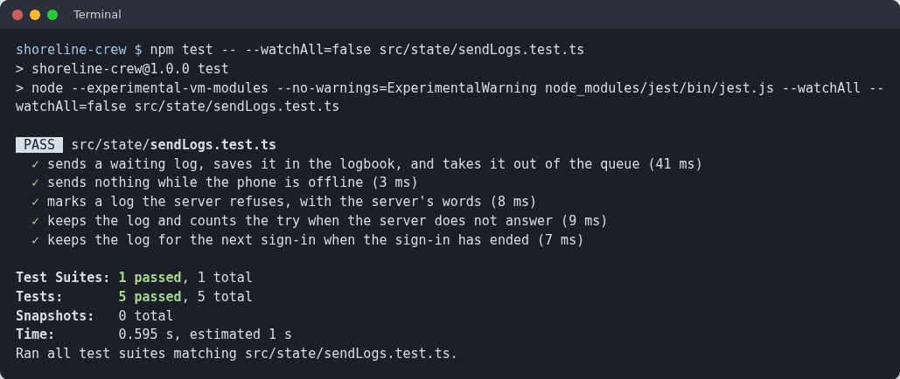

🧪 Lesson 8.2: Testing the App's Logic
A debris log written on a windy beach with one bar of signal has a long trip ahead: into a queue on the phone, through a closed app and a dead battery, and finally to the server, maybe on the third try. Nobody watches that trip, so it had better be right every time. Today you give Shoreline Crew the safety net the HQ has had since the web course: Jest tests that run the app's own logic, with the HQ's mock API answering its requests and stand-ins for every part of the phone a computer does not have.
🎯 Learning Objectives
By the end of this lesson, you will be able to:
- Set up Jest with jest-expo in an Expo SDK 58 project and explain what changes from the web course's Vitest
- Make the HQ's MSW handlers answer a phone app's requests in Node, and explain the two things that stand in the way (Expo's own
fetch, and MSW 3 being an ES module) - Replace native modules in tests in three ways: jest-expo's automatic stand-ins, a library's own Jest mock, and your own
jest.mock() - Test Shoreline Crew's logic where it matters most: rules (address checks, schemas), files (the CSV export), the offline queue, the log sender's five outcomes and the reminders
- Read a failing Jest run in the terminal and tell a broken test setup from a broken app
📦 Code for this lesson
Starting code: lesson-29-start.zip · Finished code: lesson-29-end.zip. Each folder has a README with the commands to run it.
In This Lesson
👋 Welcome: Tests for the Parts You Cannot Watch
So far you have checked Shoreline Crew by using it: tap, look, stop the API, tap again. That works for what you can see. It does not work well for what happens out of sight: the queue that keeps a log through a closed app, the sender that must never send a log twice or lose one, the reminders that must match the sign-ups after every change. Those parts have many paths (online, offline, refused, no answer, signed out), and walking every path by hand after every change is slow, so it stops happening. A test suite walks them all in about two seconds.
The HQ got its tests in Lessons 9.1 and 9.2 of the web course. You know the ideas: arrange, act, assert; find things the way people do; let MSW answer requests with the API's own code. This lesson does not teach them again. It teaches what changes when the app is a phone app, and that is more than you might expect: a different test runner, a test environment that pretends to be a phone, a fetch that is not Node's, and native modules (the keychain, the scheduler, the vibration motor) that simply do not exist on your computer.
The work is split over two lessons. Today: the app's logic, the plain functions and stores where the important decisions are made. By the end:
- Jest runs in Shoreline Crew with jest-expo, through
npm test. - The HQ's mock API answers the phone app's requests in tests, with the same sample data, rules and errors as shoreline-api.
- 28 tests cover the address checks, the debris-log schema, the CSV export, the queue, the saved session, haptics, the sender's five outcomes and the reminders.
Lesson 8.3 then tests whole screens with React Native Testing Library and walks a flow end to end with Maestro.
Why it matters for your work: on a mobile team, a pull request without tests for the logic it changes is usually not merged, and the continuous-integration server (Lesson 9.3 sets one up with GitHub Actions) runs the suite on every push. Mobile has an extra reason: a bug that reaches a store build takes days to fix for everyone (review, rollout, people updating), so catching it in a two-second test run is worth even more than on the web.
🌱 Red is information
Today you will see many failing tests, some on purpose (the Common Mistakes section broke the setup to show you what each mistake looks like) and some by accident. A failing test is the most specific error message you will ever get: it names the function, the input, what was expected and what came out. The skill this lesson builds is reading that message calmly and asking one question first: is the app wrong, or is the test setup wrong?
🔁 From Vitest to Jest
The HQ is a Vite app, so it used Vitest, which reads Vite's configuration. An Expo app is bundled by Metro, not Vite, and Expo's tooling for tests is jest-expo, a Jest preset. Vitest was designed to be Jest-compatible, so most of your test code reads the same. The differences are in the setup and in a few names:
| In the HQ (Vitest) | In Shoreline Crew (Jest + jest-expo) |
|---|---|
import { describe, it, expect, vi } from 'vitest' | Nothing to import: describe, it, expect and jest are globals (TypeScript learns about them from @types/jest) |
vi.fn(), vi.mock(), vi.mocked() | jest.fn(), jest.mock(), jest.mocked() |
Settings in vite.config.ts under test | Settings in package.json under "jest": preset, testEnvironment, setupFilesAfterEnv |
environment: 'jsdom': a pretend browser with a DOM | jest-expo's environment: a pretend phone, with no DOM and React Native's modules replaced |
| Vite transforms the code (ES modules all the way) | Babel (Expo's preset, the same one Metro uses) turns each file into CommonJS before Jest runs it |
import.meta.env.VITE_API_URL from .env files | process.env.EXPO_PUBLIC_API_URL, but Jest never reads .env.local (Metro does): the setup file sets it |
npm test = vitest (watch mode) | npm test = Jest with --watchAll; npm test -- --watchAll=false runs once |
Two habits carry over unchanged. Test files sit next to the code they test, named *.test.ts. And the HQ's src/test/ folder for test helpers comes back: server.ts for the mock API and factories.ts for sample objects. One rule is new: never put a test file inside src/app/. Expo Router treats every file in that folder as a screen (according to Expo's documentation), so a .test.tsx there becomes a route. Tests for a screen live outside it (Lesson 8.3).
💡 Mental model: a dry run on the dock
Before a boat goes out, the crew can run through the whole plan on the dock: who carries what, what happens if the radio fails. Nothing on the dock is the sea, but every decision can be practiced. A Jest run is that dry run. jest-expo builds a dock that looks like a phone from the app's point of view (Platform.OS is 'ios', the native modules answer), and your tests decide what the sea does: the server says yes, the server says no, the signal drops. The app's decisions are real; the world around them is pretend.
📱 A Phone That Is Not There: jest-expo
A test run is Node on your computer. There is no iPhone, no Hermes engine, no keychain and no notification scheduler. The jest-expo preset makes that workable. Read in its source (node_modules/jest-expo/src/preset/), it does four things:
- Transforms your code with
babel-preset-expo, so TypeScript, JSX and the@/paths work as they do in Metro. - Loads React Native's own Jest setup, which replaces the native side of React Native's modules (
Platform,AppState,Linking, the views) with JavaScript stand-ins. - Gives every Expo native module an automatic stand-in. It reads a list of each module's native functions and makes each one a
jest.fn(); the ones that return a Promise resolve toundefined. SoSecureStore.getItemAsync()does not crash in a test: it answers "nothing". - Pretends to be an iPhone. The default preset sets
Platform.OSto'ios'. (There arejest-expo/android,jest-expo/webandjest-expo/universalpresets too; the FAQ has more.)
The diagram shows where each call from your app ends up in a Shoreline Crew test:
The app's code is the real thing: the queue, the sender, the schemas, the reminder rules. Everything at the edges is a stand-in the test controls. Requests go to MSW, which runs shoreline-api's own code on a fresh copy of the sample data, exactly as in the HQ's tests. Native calls go to stand-ins whose answers each test decides and whose calls each test can read back ("was scheduleNotificationAsync called with reminder-e08?").
⚠️ What these tests cannot tell you
A stand-in answers what you told it to. If the real keychain, scheduler or vibration motor behaves differently from your stand-in (a permission prompt, a size limit, a platform quirk), every test still passes. Tests prove that the app's decisions are right for the answers you imagined; trying the app on a phone (and Lesson 8.3's end-to-end flows) proves the answers are the ones the phone really gives.
🌊 Requests: Node's fetch and the HQ's Mock API
In the HQ, MSW's setupServer intercepted Node's fetch and answered with shoreline-api's code. The plan for the phone is the same, and two things stand in the way.
1. Expo SDK 58 brings its own fetch
In SDK 58, loading the expo package replaces the global fetch with Expo's own (expo/fetch), which talks to the phone's networking code. In a test there is no phone, so Expo's fetch cannot reach anything, and MSW, which knows how to intercept Node's fetch, never gets a clean request. The fix comes in two small files:
jest.environment.js, a custom Jest environment built on jest-expo's, keeps Node'sfetchunder another name (__nodeFetch) before any app code runs.jest.setup.ts, which Jest runs before every test file, puts Node'sfetchback as the global one. It does it twice: at once, and again in abeforeAll, because loadingexpoagain later installs Expo'sfetchagain (andjest.mock()can load it again behind your back, as Step 5 shows).
2. MSW 3 is an ES module
MSW 3 ships only as ES modules (import/export), while Jest, with Expo's Babel preset, runs everything as CommonJS (require). Jest can load ES modules from node_modules only when Node's VM-modules feature is switched on. So the test script starts Node with a flag instead of calling jest directly:
node --experimental-vm-modules --no-warnings=ExperimentalWarning node_modules/jest/bin/jest.js --watchAll--no-warnings=ExperimentalWarning hides Node's note that the feature is experimental. Writing the path to Jest's own script, instead of jest, makes the same line work in PowerShell, Command Prompt and macOS/Linux shells. You never type it: it lives in package.json, and you run npm test.
The HQ's handlers, copied
shoreline-api ships its own MSW handlers (msw/handlers.ts, which runs core/api.ts), the files the HQ copied into its src/mocks/. Shoreline Crew copies the same two folders, unchanged. One wrinkle: shoreline-api is written for Node and browsers, and React Native's global types disagree with a few of its lines (its FormData has no get(), and the API's imports end in .ts). Rather than edit the API's code, the project tells TypeScript to skip src/mocks/ ("exclude" in tsconfig.json), and src/test/server.ts loads the handlers with a require() that says, in a type, the one function the tests use. Jest itself does not care about types: Babel strips them and the handlers run.
💡 Mental model: the meeting point, rehearsed
In the app, every request goes to the meeting point in EXPO_PUBLIC_API_URL. In a test, the meeting point is http://localhost:4000 (set by jest.setup.ts), and MSW stands there in place of the server, with the server's own rulebook in its hand. Nothing listens on port 4000: no request leaves Node, so tests work with shoreline-api stopped, on a plane, or on a build server.
🧰 Three Ways to Stand In for a Native Module
Shoreline Crew uses a dozen native modules. In a test, each one needs a stand-in, and there are three kinds. Which one to use depends on who wrote the module and how much of it the test needs to control:
| Kind | How | Used today for |
|---|---|---|
| jest-expo's automatic stand-ins | Nothing to write: every Expo module's native functions do nothing and resolve to undefined | expo-file-system and expo-sqlite load without errors; expo-crypto, expo-linking and the rest are there when app code imports them |
| The library's own Jest mock | jest.mock('lib', () => jest.requireActual('lib/jest/…')) in jest.setup.ts | AsyncStorage (not an Expo module, so jest-expo does not cover it); NetInfo ships one too (@react-native-community/netinfo/jest/netinfo-mock.js) |
Your own jest.mock() | Automatic (jest.mock('expo-haptics'): every function becomes an empty jest.fn(), plain values stay) or a factory (jest.mock('x', () => ({ … })): exactly what you write) | expo-secure-store and expo-haptics (automatic), expo-notifications (a factory), and two of the app's own modules: the SQLite logbook and the "sign-in has ended" notice |
The rule of thumb: let the automatic stand-in be when the test does not care about a module; take control with jest.mock() when the test needs to decide its answers (a saved session, a permission) or check its calls (which reminders were scheduled). Then jest.mocked(), which you know as vi.mocked(), gives you the module with mock types, so mockResolvedValue and mock.calls type-check.
Two details trip people up, and both appear in today's project:
- An empty
jest.fn()returnsundefined, not a Promise. Code that doesnotificationAsync(…).catch(…)then fails with "Cannot read properties of undefined (reading 'catch')". Give such functions an answer:mockResolvedValue(). - Some real modules cannot even load under Jest. expo-notifications sets up listeners when it is first imported, and
setNotificationHandlerfails without a phone ("handleSubscription.remove is not a function", measured). For a module like that, a factory that lists only what your code uses is the honest choice.
Mocking one of your own modules (jest.mock('@/storage/logbook')) is a design decision: you are saying "this test is about the sender, not about SQLite". The logbook's SQL deserves its own test (on a phone, or with a Node SQLite library: the FAQ discusses it), but the sender's test should not fail because of it.
🎯 What to Test, and Keeping Tests Apart
You cannot test everything, and you should not try. In a phone app, spend tests where a mistake costs a volunteer something and where you cannot see the mistake by tapping around:
- Data that must not be lost or sent twice: the queue and the sender (five outcomes: sent, offline, refused, no answer, signed out).
- Rules people depend on: the debris-log schema (a typed "2,5" is 2.5 kilograms; the messages are the API's), the address checks that explain a wrong
.env.local. - Things that leave the app: the CSV file someone opens in a spreadsheet (a note starting with
=must not run as a formula), and the reminders the phone will show at 6 pm. - What the app remembers: the saved session and the saved queue, including saved data from an older version of the app.
Skip what the libraries already test (that Zustand stores a value, that Zod checks a string) and what a test cannot judge (whether the screen looks right: that is the phone, and Lesson 8.3).
State lives in modules
A web page reloads between visits; a test file does not reload between tests. Shoreline Crew keeps state in modules: the session in client.ts, the settings in settings.ts, the queue in a Zustand store, the cached sign-ups in queryClient, and AsyncStorage's stand-in keeps what the previous test saved. The HQ's setup file reset its stores after each test; today each test file resets what it uses, in a beforeEach: useLogQueue.setState(useLogQueue.getInitialState()), setSession(…), AsyncStorage.clear(), queryClient.clear(), and jest.clearAllMocks() to forget the calls the stand-ins recorded. A test that passes alone and fails in the full run almost always means something leaked from the test before it.
Dates in the sample data
shoreline-api builds its sample data around today's date (today's cleanup is always e17; Weekend Cove Cleanup, e08, is always a few days ahead), and its handlers do the same in tests. So assert on what stays the same (ids, titles, the API's messages, the order) rather than on a printed date, and use fixed dates only in objects you build yourself (makeEvent()).
⚠️ Common Mistakes
Each of these was made on purpose in a copy of the finished project, and the output is what the terminal printed. Several of them break the setup, not the app, and the trick is to recognize them by their shape.
⚠️ Running npx jest instead of npm test
Plain npx jest skips the --experimental-vm-modules flag in the test script, so Jest cannot load MSW 3. Every test file that imports msw fails before a single test runs:
Expected output
FAIL src/state/sendLogs.test.ts
● Test suite failed to run
Must use import to load ES Module: ~/shoreline/shoreline-crew/node_modules/msw/lib/core/index.js
The file contains ESM syntax (import/export) that could not be executed as CommonJS. Either:
- Configure a transform (e.g. babel-jest) that compiles this file to CommonJS (see https://jestjs.io/docs/code-transformation)
- If the file is in "node_modules", allow it to be transformed by adjusting "transformIgnorePatterns" (see https://jestjs.io/docs/configuration#transformignorepatterns-arraystring)
- Use Node v24.9+ where Jest supports require(esm) natively (see https://jestjs.io/docs/ecmascript-modules#require-of-esm)
...
Test Suites: 1 failed, 1 total
Tests: 0 total
Snapshots: 0 total
Time: 0.789 s, estimated 1 s
Ran all test suites matching src/state/sendLogs.test.ts.Do not follow the message's suggestions: transformIgnorePatterns does not help with MSW 3 (its dependencies ship .mjs files), and this run already used Node 24.22. Run the tests with npm test, and pass extra options after --: npm test -- --watchAll=false src/state.
⚠️ Leaving out the environment that puts Node's fetch back
With only "preset": "jest-expo" (no jest.environment.js, no fetch line in the setup), requests go to Expo's fetch, which cannot reach anything in a test. The sender's tests then fail in a misleading pattern:
Expected output
FAIL src/state/sendLogs.test.ts
✕ sends a waiting log, saves it in the logbook, and takes it out of the queue (10 ms)
✓ sends nothing while the phone is offline (3 ms)
✕ marks a log the server refuses, with the server's words (3 ms)
✓ keeps the log and counts the try when the server does not answer (2 ms)
✕ keeps the log for the next sign-in when the sign-in has ended (2 ms)
...
● sends a waiting log, saves it in the logbook, and takes it out of the queue
expect(received).toEqual(expected) // deep equality
- Expected - 1
+ Received + 42
- Array []
+ Array [
+ Object {
+ "attempts": 1,
...
> 34 | expect(useLogQueue.getState().logs).toEqual([]);
| ^The two tests that pass are the two where no answer was expected (offline, and "no answer"), and the failed one shows "attempts": 1: the app counted a try that got no answer. When every request in a test run "gets no answer" although MSW is listening, suspect the fetch, not the app.
⚠️ Forgetting AsyncStorage's Jest mock
AsyncStorage is a React Native community module, not an Expo one, so jest-expo has no stand-in for it. Without the jest.mock() line in jest.setup.ts, any test file that loads the queue or the settings fails at once:
Expected output
FAIL src/state/logQueue.test.ts
● Test suite failed to run
[@RNC/AsyncStorage]: NativeModule: AsyncStorage is null.
To fix this issue try these steps:
...
• If this happens while testing with Jest, check out how to integrate AsyncStorage here: https://react-native-async-storage.github.io/async-storage/docs/advanced/jest
...
Test Suites: 1 failed, 1 total
Tests: 0 totalThe message's first suggestions are for an app on a phone; the last one is yours. The library's mock keeps values in memory for the length of a test file, which is why the queue's tests call AsyncStorage.clear() before each test.
⚠️ Forgetting that an empty mock answers undefined
jest.mock('expo-haptics') turns notificationAsync into a function that returns undefined. feel() calls .catch() on what it returns, so without mockResolvedValue():
Expected output
FAIL src/utils/haptics.test.ts
✕ buzzes "success" when something went through (1 ms)
✓ stays still when the volunteer turned buzzing off (1 ms)
● buzzes "success" when something went through
TypeError: Cannot read properties of undefined (reading 'catch')
31 | );
32 | // A buzz that could not play is never worth an error: the words on the screen say it all
> 33 | buzz.catch(() => {});
| ^
34 | }
35 |
at catch (src/utils/haptics.ts:33:8)
at Object.<anonymous> (src/utils/haptics.test.ts:17:7)
...
Test Suites: 1 failed, 1 total
Tests: 1 failed, 1 passed, 2 totalThe stack trace points into the app (haptics.ts:33), but the app is fine: on a phone, notificationAsync always returns a Promise. When a test fails inside code that works on your phone, check what your stand-ins return first.
⚠️ Tests that pass in Jest and fail tsc
Jest does not check types (Babel only strips them), so a test suite can be green while npx tsc --noEmit is red. Two ways this happens today. Without "types": ["jest"] in tsconfig.json (TypeScript 6 loads no global types unless the list names them), every describe, it and jest is unknown:
Expected output
src/api/address.test.ts:3:1 - error TS2593: Cannot find name 'describe'. Do you need to install type definitions for a test runner? Try `npm i --save-dev @types/jest` or `npm i --save-dev @types/mocha` and then add 'jest' or 'mocha' to the types field in your tsconfig.
3 describe('addressProblem', () => {
~~~~~~~~
...
Found 113 errors in 10 files.
Errors Files
3 jest.setup.ts:11
18 src/api/address.test.ts:3
12 src/api/schemas.test.ts:23
8 src/auth/session.test.ts:9
22 src/notifications/reminders.test.ts:13
12 src/state/logQueue.test.ts:9
18 src/state/sendLogs.test.ts:14
8 src/storage/logbookExport.test.ts:17
4 src/test/server.ts:37
8 src/utils/haptics.test.ts:8And without "src/mocks" in "exclude", TypeScript checks shoreline-api's copied code against React Native's types:
Expected output
src/mocks/core/api.ts:6:8 - error TS5097: An import path can only end with a '.ts' extension when 'allowImportingTsExtensions' is enabled.
6 } from './seed.ts'
~~~~~~~~~~~
src/mocks/core/api.ts:594:26 - error TS2339: Property 'get' does not exist on type 'FormData'.
594 const file = form?.get('photo')
~~~
src/mocks/msw/handlers.ts:13:44 - error TS5097: An import path can only end with a '.ts' extension when 'allowImportingTsExtensions' is enabled.
13 import { createApi, type ApiOptions } from '../core/api.ts'
~~~~~~~~~~~~~~~~
Found 3 errors in 2 files.
Errors Files
2 src/mocks/core/api.ts:6
1 src/mocks/msw/handlers.ts:13Do not "fix" the copied files: they are the API's, kept identical so a new version can be copied over them. Keep them out of the type check, and let src/test/server.ts describe the one function you call.
⚠️ Tests that depend on the test before them
The queue, the session and the settings live in modules, and nothing resets them between tests unless you do. A test that adds a log, followed by a test that expects an empty queue, passes alone (npm test -- --watchAll=false -t "keeps one log") and fails in the full run, or the other way around. There is no special error for this: the symptom is a test whose result depends on which other tests ran. Reset in beforeEach, every time, everything the test file touches.
🛠️ Project: Shoreline Crew's First Test Suite
You set Jest up once, then write tests from the simplest (plain functions) to the most involved (the sender talking to the mock API with native modules replaced). Run npm test in a second terminal from Step 2 on and leave it running: it reruns the tests every time you save. You do not need shoreline-api or Metro running for any of this.
Step 1: Install Jest and set it up (15 min)
In the shoreline-crew folder, install the test tools as development dependencies. npx expo install --dev picks the versions that match SDK 58 for the packages Expo knows (jest-expo, jest, @types/jest) and passes the others to npm:
npx expo install --dev jest-expo jest @types/jest @testing-library/react-native mswExpected output
env: load .env.local
env: export EXPO_PUBLIC_API_URL
› Installing 3 SDK 58.0.0 compatible native modules and 2 other packages using npm
> npm install --save-dev @testing-library/react-native msw
...
added 586 packages, and audited 1412 packages in 22s
218 packages are looking for funding
run `npm fund` for details
28 vulnerabilities (1 low, 27 moderate)
...
npm warn install-scripts 1 package has install scripts not yet covered by allowScripts:
npm warn install-scripts @parcel/watcher@2.6.0 (install: node scripts/build-from-source.js)Expo calls the three it knows "native modules" in that line; they are just test tools. React Native Testing Library is for Lesson 8.3, installed now so the setup is done once. The deprecation warnings and the "vulnerabilities" count come from packages deep inside Jest's own tools, which run only on your computer during tests; do not run npm audit fix --force, which may install versions that do not match SDK 58. Your package counts and time will differ.
Now tell npm how to run Jest, and Jest how to run your tests. In package.json, add a test script and a "jest" section (the install already added the packages above them):
"web": "expo start --web",
- "lint": "expo lint"
+ "lint": "expo lint",
+ "test": "node --experimental-vm-modules --no-warnings=ExperimentalWarning node_modules/jest/bin/jest.js --watchAll"
},
- "private": true
+ "private": true,
+ "jest": {
+ "preset": "jest-expo",
+ "testEnvironment": "./jest.environment.js",
+ "setupFilesAfterEnv": [
+ "./jest.setup.ts"
+ ]
+ }
}The custom environment, a new file next to package.json, in plain JavaScript like the jest-expo environment it builds on:
// Shoreline Crew's Jest environment (new). Expo SDK 58 swaps the global fetch for Expo's own
// (expo/fetch), which only works inside the app on a phone: under Jest it answers nothing.
// This keeps Node's fetch under another name; jest.setup.ts puts it back for the tests.
const { TestEnvironment } = require('jest-expo/src/preset/nativeEnvironment');
module.exports = class ShorelineEnvironment extends TestEnvironment {
constructor(config, context) {
super(config, context);
this.global.__nodeFetch = this.global.fetch;
}
};The setup file, also new. Jest runs it before every test file, after the test functions (beforeAll, jest.mock) exist:
// Runs before every test file (package.json "jest" > "setupFilesAfterEnv")
// 1. Requests go through Node's fetch (kept by jest.environment.js), where MSW can answer them.
// Loading the expo package installs Expo's fetch again (jest.mock() can load it a second time),
// so put Node's back now and once more before the file's tests start
function useNodeFetch() {
const nodeFetch = (globalThis as { __nodeFetch?: typeof fetch }).__nodeFetch;
Object.defineProperty(globalThis, 'fetch', { value: nodeFetch, writable: true, configurable: true });
}
useNodeFetch();
beforeAll(useNodeFetch);
// 2. The API address the tests use. .env.local is Metro's: Jest never reads it
process.env.EXPO_PUBLIC_API_URL = 'http://localhost:4000';
// 3. Native modules that have no phone under Jest: use the stand-ins their authors ship
jest.mock('@react-native-async-storage/async-storage', () =>
jest.requireActual('@react-native-async-storage/async-storage/jest/async-storage-mock'),
);- Part 1 is the
fetchfix from Requests.Object.definePropertyreplaces the property outright, getter and all, which is how Expo installed its own. - Part 2 gives the app the address the mock API answers on.
client.tsreadsprocess.env.EXPO_PUBLIC_API_URLeach time it makes a request, so setting it here is enough. - Part 3 swaps AsyncStorage for the in-memory version its authors ship for Jest.
Last, TypeScript and ESLint. TypeScript needs Jest's global types, and must skip the copied API code (next step). In tsconfig.json:
]
- }
+ },
+ "types": [
+ "jest"
+ ]
},
// ...
"expo-env.d.ts"
+ ],
+ "exclude": [
+ "node_modules",
+ "src/mocks"
]ESLint should leave the copied code alone too, as it already does for types.ts. In eslint.config.js:
{
- // dist: export output; src/api/types.ts: a copy of the API's contract, never edited
- ignores: ['dist/*', 'src/api/types.ts'],
+ // dist: export output. src/api/types.ts and src/mocks: copies of shoreline-api's code, never edited
+ ignores: ['dist/*', 'src/api/types.ts', 'src/mocks/*'],
},Step 2: The mock API, and a first test (15 min)
Copy shoreline-api's core and msw folders into src/mocks/, unchanged. From the shoreline-crew folder (shoreline-api sits next to it in your shoreline course folder), on macOS or Linux:
mkdir -p src/mocks
cp -r ../shoreline-api/core ../shoreline-api/msw src/mocks/In PowerShell on Windows:
New-Item -ItemType Directory -Force src/mocks
Copy-Item -Recurse ../shoreline-api/core, ../shoreline-api/msw src/mocks/Then the bridge between the tests and those files, in a new src/test/ folder. It is the HQ's server.ts with three differences: a typed require() instead of an import, the address written out (no import.meta.env here), and a startMockApi() helper that each test file calls, instead of a global setup that would load MSW for tests that never make a request:
// The mock API for tests: shoreline-api's own code answers the app's requests inside the test run
// (the HQ's src/test/server.ts, with one difference: how it loads the handlers)
import type { RequestHandler } from 'msw';
import { setupServer } from 'msw/node';
/** The part of shoreline-api's createApi() the tests use: reset() puts the sample data back */
type MockApi = { reset(): void };
// src/mocks/ is shoreline-api's code, copied unchanged. Two of its lines do not type-check
// against React Native's global types, so tsconfig.json leaves that folder out, and this
// require() says what the one function we call looks like
// eslint-disable-next-line @typescript-eslint/no-require-imports
const { createHandlers } = require('../mocks/msw/handlers.ts') as {
createHandlers(options?: { baseUrl?: string }): { handlers: RequestHandler[]; api: MockApi };
};
/** The address jest.setup.ts gives the app */
export const API_URL = 'http://localhost:4000';
export const { handlers, api } = createHandlers({ baseUrl: API_URL });
export const server = setupServer(...handlers);
/** Every request the app sends from now on, written as 'POST /api/events/e17/logs' */
export function recordRequests(): string[] {
const requests: string[] = [];
server.events.on('request:start', ({ request }) => {
requests.push(`${request.method} ${new URL(request.url).pathname}`);
});
return requests;
}
/**
* Answer this test file's requests with the mock API: call it once at the top of a test file
* that talks to shoreline-api. A request the mock API does not know fails the test.
*/
export function startMockApi(): void {
beforeAll(() => server.listen({ onUnhandledFrame: 'error' }));
// Every test starts from the sample data, with only the API's own handlers
beforeEach(() => api.reset());
afterEach(() => {
server.resetHandlers();
server.events.removeAllListeners();
});
afterAll(() => server.close());
}The eslint-disable-next-line comment is there because Expo's lint rules warn about require() in TypeScript (@typescript-eslint/no-require-imports), for good reasons that do not apply to this one line. onUnhandledFrame: 'error' is MSW 3's name for "fail on a request no handler knows", as in the HQ.
And the factories: complete sample objects, as the HQ had. A test passes only the parts it cares about:
// Sample data for tests (the HQ's idea): complete, correctly typed objects. A test passes only
// the parts it is about.
import type { Session } from '@/api/client';
import type { LogToSend } from '@/api/schemas';
import type { CleanupEvent } from '@/api/types';
/** Today's cleanup in the sample data (e17), where Theo has a spot */
export function makeEvent(changes: Partial<CleanupEvent> = {}): CleanupEvent {
return {
id: 'e17',
title: 'Tide Pool Morning Cleanup',
siteId: 'otter-creek',
status: 'scheduled',
date: '2026-07-04',
startTime: '08:00',
endTime: '10:30',
capacity: 12,
spotsTaken: 5,
meetingPoint: 'Gravel pull-out on Highway 1',
description: 'We clear trash caught in the willows and along the creek banks. Expect mud.',
suppliesProvided: ['gloves', 'bags'],
leadOrganizerId: 'v03',
createdAt: '2026-06-01T16:00:00.000Z',
updatedAt: '2026-06-01T16:00:00.000Z',
...changes,
};
}
/** A debris log for a cleanup, as the log form hands it to the queue */
export function makeLogToSend(clientId: string, event = makeEvent()): LogToSend {
return {
event,
log: {
clientId,
items: [{ category: 'plastic-bottles', count: 12 }],
bags: 2,
weightKg: 3.5,
note: '',
recordedAt: '2026-07-04T17:30:00.000Z',
},
};
}
/** Theo, signed in as a volunteer (dev-volunteer: a token the API accepts without signing in) */
export const volunteer: Session = {
token: 'dev-volunteer',
user: { id: 'v04', name: 'Theo Nakamura', email: 'theo.nakamura@example.com', role: 'volunteer' },
};Now a first test, for the address checks of Lesson 5.1. They are plain functions: the platform is an argument, so one test can ask what an iPhone, an Android phone and the web preview would each be told about the same address. Create src/api/address.test.ts next to address.ts:
import { addressAdvice, addressProblem, hostOf } from '@/api/address';
describe('addressProblem', () => {
it('accepts an address written correctly', () => {
expect(addressProblem('http://192.168.1.42:4000')).toBeNull();
});
it('explains a missing address, a missing http:// and an /api at the end', () => {
expect(addressProblem('')).toMatch(/is not set/);
expect(addressProblem('192.168.1.42:4000')).toMatch(/start it with http:\/\//);
expect(addressProblem('http://localhost:4000/api')).toMatch(/leave out the \/api/);
});
});
describe('addressAdvice', () => {
it('reads the host from an address', () => {
expect(hostOf('http://LOCALHOST:4000')).toBe('localhost');
expect(hostOf('http://[::1]:4000')).toBe('[::1]');
});
it('tells a phone that localhost is the phone itself', () => {
expect(addressAdvice('http://localhost:4000', 'ios')).toMatch(/localhost is the phone itself/);
expect(addressAdvice('http://localhost:4000', 'android')).toMatch(/10\.0\.2\.2 on the emulator/);
});
it('gives each device its own advice for the same address', () => {
const address = 'http://10.0.2.2:4000';
expect(addressAdvice(address, 'android')).toMatch(/works on the emulator, not on a phone/);
expect(addressAdvice(address, 'ios')).toMatch(/only inside the Android emulator/);
expect(addressAdvice(address, 'web')).toMatch(/the web preview uses localhost/);
});
});Start the tests in watch mode, in a second terminal, and leave them running:
npm testYou should see PASS src/api/address.test.ts and Tests: 5 passed, then Jest's watch menu. Try the loop once: change 'localhost' to 'localhost2' in the first hostOf expectation, save, read the red ✕ and the "Expected / Received" lines, and change it back. From here on, every file you save reruns the tests.
Step 3: Rules people depend on: the schema and the CSV file (15 min)
Lesson 5.4's debris-log schema turns what a volunteer typed into what the API wants. Its tests read like its promises: text becomes numbers, only the debris found is listed, a decimal comma works, and the messages are the API's. Create src/api/schemas.test.ts:
import { debrisLogSchema, toNewLog, type DebrisLogValues } from '@/api/schemas';
import type { DebrisCategory } from '@/api/types';
import { debrisCategories } from '@/utils/debris';
// The form as it opens: every box empty except the ones a test fills in
function formValues(changes: Partial<DebrisLogValues> = {}): DebrisLogValues {
const counts = Object.fromEntries(debrisCategories.map((category) => [category, '0']));
return {
counts: counts as Record<DebrisCategory, string>,
bags: '1',
weightKg: '2.5',
note: '',
...changes,
};
}
// The first message for one field, or undefined when that field is fine
function messageFor(values: DebrisLogValues, field: string) {
const result = debrisLogSchema.safeParse(values);
return result.error?.issues.find((issue) => issue.path.join('.') === field)?.message;
}
describe('debrisLogSchema', () => {
it('turns typed text into numbers and lists only the debris that was found', () => {
const values = formValues();
values.counts['plastic-bottles'] = ' 12 ';
values.counts.glass = '3';
expect(debrisLogSchema.parse(values)).toEqual({
bags: 1,
weightKg: 2.5,
note: '',
items: [
{ category: 'plastic-bottles', count: 12 },
{ category: 'glass', count: 3 },
],
});
});
it('reads a decimal comma as a point', () => {
expect(debrisLogSchema.parse(formValues({ weightKg: '2,5' })).weightKg).toBe(2.5);
});
it("answers with the API's own messages", () => {
expect(messageFor(formValues({ bags: '' }), 'bags')).toBe(
'Bags must be a whole number from 0 to 500.',
);
expect(messageFor(formValues({ weightKg: 'lots' }), 'weightKg')).toBe(
'Weight must be a number of kilograms from 0 to 5000.',
);
const values = formValues();
values.counts.foam = '1.5';
expect(messageFor(values, 'counts.foam')).toBe('Count must be a whole number from 0 to 100000.');
});
});
describe('toNewLog', () => {
it('adds the id and the time made on the phone', () => {
const data = debrisLogSchema.parse(formValues());
const log = toNewLog(data, 'log-0001', new Date('2026-07-04T17:30:00Z'));
expect(log).toMatchObject({ clientId: 'log-0001', recordedAt: '2026-07-04T17:30:00.000Z' });
});
});formValues() is a small factory of its own: the form as it opens, with every count at '0' (Zod 4 makes a record with enum keys require every key, as the form does). The as Record<DebrisCategory, string> is needed because Object.fromEntries cannot know it built every key.
Lesson 6.5's CSV export is a file other people open in spreadsheet apps, so its three special cases (the byte order mark that makes "Café" survive, CRLF line ends, and the guard against formulas) each get a test. logbookExport.ts imports expo-file-system and expo-sharing; jest-expo's automatic stand-ins let it load, and logbookCsv never calls them. Create src/storage/logbookExport.test.ts:
import type { LogbookEntry } from '@/storage/logbook';
import { logbookCsv } from '@/storage/logbookExport';
function makeEntry(changes: Partial<LogbookEntry> = {}): LogbookEntry {
return {
clientId: 'log-0001',
eventTitle: 'Tide Pool Morning Cleanup',
eventDate: '2026-07-04',
pieces: 42,
bags: 1,
weightKg: 2.5,
note: '',
...changes,
};
}
describe('logbookCsv', () => {
it('starts with a byte order mark and ends every row with CRLF', () => {
const csv = logbookCsv([makeEntry()]);
expect(csv.startsWith('\uFEFF')).toBe(true);
expect(csv.split('\r\n')).toEqual([
'\uFEFF"Cleanup","Date","Pieces","Bags","Weight (kg)","Note"',
'"Tide Pool Morning Cleanup","2026-07-04",42,1,2.5,""',
'',
]);
});
it('keeps commas, quotes and line breaks inside one cell', () => {
const csv = logbookCsv([makeEntry({ note: 'Nets, "lots"\nof them' })]);
expect(csv).toContain('"Nets, ""lots""\nof them"');
});
it('stops a note from running as a spreadsheet formula', () => {
const csv = logbookCsv([makeEntry({ note: '=SUM(A1:A9)' })]);
expect(csv).toContain(`"'=SUM(A1:A9)"`);
});
});Write the byte order mark as the escape \uFEFF, as the app does. (An editor that "helpfully" pastes the invisible character itself makes the test pass and the file impossible to read.)
Step 4: Native modules: the queue, the saved session, the buzz (20 min)
Three test files, one for each kind of stand-in. First the queue of Lesson 5.5, with AsyncStorage's own mock from the setup file. The tests check what the volunteer relies on: a double tap is still one log, the queue survives closing the app (what is saved, and what is not), and saved data from an older version of the app is upgraded or dropped, never trusted blindly. Create src/state/logQueue.test.ts:
import AsyncStorage from '@react-native-async-storage/async-storage';
import { loadLogQueue, useLogQueue } from '@/state/logQueue';
import { makeLogToSend, volunteer } from '@/test/factories';
const savedKey = 'shoreline-crew-log-queue';
// The store lives in a module: every test starts with an empty queue and empty storage
beforeEach(async () => {
useLogQueue.setState(useLogQueue.getInitialState());
await AsyncStorage.clear();
});
it('keeps one log per clientId', () => {
const { add } = useLogQueue.getState();
add(volunteer.user.id, makeLogToSend('log-0001'), []);
add(volunteer.user.id, makeLogToSend('log-0001'), []); // the same log again: a double tap
expect(useLogQueue.getState().logs).toHaveLength(1);
expect(useLogQueue.getState().logs[0]).toMatchObject({ status: 'waiting', attempts: 0 });
});
it('saves the logs on the phone, but not "sending right now"', async () => {
useLogQueue.getState().add(volunteer.user.id, makeLogToSend('log-0001'), []);
useLogQueue.getState().setSending(true);
const saved = JSON.parse((await AsyncStorage.getItem(savedKey)) ?? 'null');
expect(saved.version).toBe(1);
expect(saved.state.logs).toHaveLength(1);
expect(saved.state).not.toHaveProperty('sending');
});
it('loads a saved queue, keeps what passes the check, and upgrades version 0', async () => {
const fromVersion0 = { ...makeLogToSend('log-0001'), volunteerId: 'v04', status: 'waiting', attempts: 0 };
const broken = { volunteerId: 'v04', status: 'lost' };
await AsyncStorage.setItem(
savedKey,
JSON.stringify({ version: 0, state: { logs: [fromVersion0, broken] } }),
);
await loadLogQueue();
const { logs } = useLogQueue.getState();
expect(logs).toHaveLength(1);
expect(logs[0].log.clientId).toBe('log-0001');
expect(logs[0].photos).toEqual([]); // version 1 added photos
});Zustand's getInitialState() gives the store as create() made it, so setState(getInitialState()) is the reset. Reading AsyncStorage.getItem() back shows the exact JSON a phone would keep: persist wraps the state as { state, version }.
Next, the saved session of Lesson 4.3, with an automatic mock of expo-secure-store: every function an empty jest.fn(), and each test decides what the keychain answers. Create src/auth/session.test.ts:
import * as SecureStore from 'expo-secure-store';
import { readSession, setSession } from '@/api/client';
import { loadSession } from '@/auth/session';
import { volunteer } from '@/test/factories';
// No keychain under Jest: an automatic mock, where every function returns undefined until a
// test says what it should answer
jest.mock('expo-secure-store');
const secureStore = jest.mocked(SecureStore);
beforeEach(() => {
setSession(null);
secureStore.isAvailableAsync.mockResolvedValue(true);
secureStore.setItemAsync.mockResolvedValue();
secureStore.deleteItemAsync.mockResolvedValue();
});
it('starts signed in with the session saved on the phone, and saves every change', async () => {
secureStore.getItemAsync.mockResolvedValue(JSON.stringify(volunteer));
await loadSession();
expect(readSession()).toEqual(volunteer);
setSession(null); // signing out
expect(secureStore.deleteItemAsync).toHaveBeenCalledWith('shoreline-crew-session');
});
it('starts signed out when the saved session is not a session', async () => {
secureStore.getItemAsync.mockResolvedValue('{"token": 42}');
await loadSession();
expect(readSession()).toBeNull();
});Jest moves jest.mock() calls above the imports (it "hoists" them), so the app's session.ts gets the stand-in even though the line comes after the import. jest.mocked(SecureStore) changes nothing at run time; it gives TypeScript the mock types so mockResolvedValue type-checks. Notice isAvailableAsync: an empty mock answers undefined, which loadSession() would read as "no secure storage here" and skip everything.
Last, Lesson 6.5's haptics, with the same kind of mock and the trap from Common Mistakes handled. Create src/utils/haptics.test.ts:
import { NotificationFeedbackType, notificationAsync } from 'expo-haptics';
import { changeSettings } from '@/state/settings';
import { feel } from '@/utils/haptics';
// An automatic mock keeps the module's plain values (NotificationFeedbackType.Success is still
// 'success') and swaps every function for one that does nothing and answers undefined
jest.mock('expo-haptics');
const buzz = jest.mocked(notificationAsync);
// feel() calls .catch() on what notificationAsync gives back: give it a Promise
beforeEach(() => buzz.mockResolvedValue());
afterEach(() => buzz.mockClear());
// jest-expo runs the tests as an iPhone (Platform.OS is 'ios'): the iPhone's kind of buzz
it('buzzes "success" when something went through', () => {
changeSettings({ hapticsOn: true });
feel('success');
expect(buzz).toHaveBeenCalledWith(NotificationFeedbackType.Success);
});
it('stays still when the volunteer turned buzzing off', () => {
changeSettings({ hapticsOn: false });
feel('error');
expect(buzz).not.toHaveBeenCalled();
});These tests cannot tell you that the buzz feels right, or that an iPhone with System Haptics off stays still (Lesson 6.5's phone checks do that). They lock in the app's part: the right kind of buzz, and none when the volunteer said no.
Step 5: The sender's five outcomes, against the mock API (25 min)
This is the test the lesson has been building towards. sendWaitingLogs() (Lesson 5.5) decides, for each answer, whether a log is done, refused or still waiting. The mock API gives real answers from shoreline-api's rules: e17 is today's cleanup, where Theo has a spot, so a log for it is saved (201); e08 is a few days ahead, so the API answers 409 "This cleanup has not happened yet."; a token it does not know gets 401. Only "no answer at all" needs an override, MSW's HttpResponse.error(), which makes the request fail like a dropped connection. Create src/state/sendLogs.test.ts:
import { onlineManager } from '@tanstack/react-query';
import { http, HttpResponse } from 'msw';
import { readSession, setSession } from '@/api/client';
import { markSignInEnded } from '@/auth/ended';
import { useLogQueue } from '@/state/logQueue';
import { sendWaitingLogs } from '@/state/sendLogs';
import { saveSentLogs } from '@/storage/logbook';
import { makeEvent, makeLogToSend, volunteer } from '@/test/factories';
import { API_URL, recordRequests, server, startMockApi } from '@/test/server';
// The logbook is SQLite on the phone, and "your sign-in has ended" is a screen notice: Jest
// replaces both modules with empty functions that remember how they were called
jest.mock('@/storage/logbook');
jest.mock('@/auth/ended');
startMockApi();
beforeEach(() => {
useLogQueue.setState(useLogQueue.getInitialState());
setSession(volunteer);
onlineManager.setOnline(true);
});
// One log waiting for Theo; the cleanup is e17 (today, where he has a spot) unless a test says
function queueLog(event = makeEvent()) {
useLogQueue.getState().add(volunteer.user.id, makeLogToSend('log-0001', event), []);
}
it('sends a waiting log, saves it in the logbook, and takes it out of the queue', async () => {
queueLog();
await sendWaitingLogs(volunteer.user.id);
expect(useLogQueue.getState().logs).toEqual([]);
expect(saveSentLogs).toHaveBeenCalledWith([
{ log: expect.objectContaining({ clientId: 'log-0001', eventId: 'e17' }), event: makeEvent() },
]);
});
it('sends nothing while the phone is offline', async () => {
queueLog();
onlineManager.setOnline(false);
const requests = recordRequests();
await sendWaitingLogs(volunteer.user.id);
expect(requests).toEqual([]);
expect(useLogQueue.getState().logs).toHaveLength(1);
});
it("marks a log the server refuses, with the server's words", async () => {
queueLog(makeEvent({ id: 'e08', title: 'Weekend Cove Cleanup' })); // in a few days
await sendWaitingLogs(volunteer.user.id);
expect(useLogQueue.getState().logs[0]).toMatchObject({
status: 'refused',
problem: 'This cleanup has not happened yet.',
});
});
it('keeps the log and counts the try when the server does not answer', async () => {
server.use(http.post(`${API_URL}/api/events/:id/logs`, () => HttpResponse.error()));
queueLog();
await sendWaitingLogs(volunteer.user.id);
expect(useLogQueue.getState().logs[0]).toMatchObject({ status: 'waiting', attempts: 1 });
});
it('keeps the log for the next sign-in when the sign-in has ended', async () => {
setSession({ ...volunteer, token: 'a-token-the-api-forgot' });
queueLog();
await sendWaitingLogs(volunteer.user.id);
expect(markSignInEnded).toHaveBeenCalled();
expect(readSession()).toBeNull();
expect(useLogQueue.getState().logs[0]).toMatchObject({ status: 'waiting', attempts: 0 });
});- Two of the app's own modules are mocked, automatically: the SQLite logbook (no database here, and this test is about the sender) and the "sign-in has ended" notice (so the test can ask whether it was raised).
saveSentLogsbecomes an empty function that remembers its calls, and the first test checks it got the saved log. - Offline is TanStack Query's
onlineManager, the same switch NetInfo flips in the app (Lesson 5.2), so the test sets it directly and checks that not a single request went out. - The sign-in test uses a token the API does not know: the real 401 path, through the real client, which also signs the phone out (
readSession()isnull). The log stays waiting for the next sign-in.
A note on the setup file's second useNodeFetch, in beforeAll: the course found it the hard way. An automatic jest.mock('@/storage/logbook') builds its stand-in by loading the real module once more, on the side, and that loads expo again, which installs Expo's fetch again. Without the beforeAll, the first test here failed with the log still waiting and "attempts": 1, exactly like the second mistake card. Putting Node's fetch back just before the tests start makes the order of imports and mocks not matter.
Run just this file to see every test listed:
npm test -- --watchAll=false src/state/sendLogs.test.tsExpected output
> shoreline-crew@1.0.0 test
> node --experimental-vm-modules --no-warnings=ExperimentalWarning node_modules/jest/bin/jest.js --watchAll --watchAll=false src/state/sendLogs.test.ts
PASS src/state/sendLogs.test.ts
✓ sends a waiting log, saves it in the logbook, and takes it out of the queue (42 ms)
✓ sends nothing while the phone is offline (2 ms)
✓ marks a log the server refuses, with the server's words (9 ms)
✓ keeps the log and counts the try when the server does not answer (7 ms)
✓ keeps the log for the next sign-in when the sign-in has ended (8 ms)
Test Suites: 1 passed, 1 total
Tests: 5 passed, 5 total
Snapshots: 0 total
Time: 0.606 s, estimated 4 s
Ran all test suites matching src/state/sendLogs.test.ts.
Each line is a promise the app makes to a volunteer, now checked in a fraction of a second. In Lesson 5.5 you tried these outcomes by hand, stopping and starting shoreline-api.
Step 6: The reminders, and the whole suite (15 min)
Lesson 6.4's updateReminders() must leave the phone with exactly the right reminders: one per confirmed cleanup still ahead, nothing the volunteer no longer needs, and nothing of anyone else's. The real expo-notifications cannot even load under Jest, so this test replaces it with a factory that lists only what reminders.ts uses. The sign-ups come from the mock API (Theo's sample sign-ups), through the app's real queryClient. Create src/notifications/reminders.test.ts:
import { PermissionStatus } from 'expo';
import * as Notifications from 'expo-notifications';
import { setSession } from '@/api/client';
import { queryClient } from '@/api/queries';
import { updateReminders } from '@/notifications/reminders';
import { changeSettings } from '@/state/settings';
import { volunteer } from '@/test/factories';
import { startMockApi } from '@/test/server';
// The phone's notifications, replaced by functions the tests control and read back. Only what
// reminders.ts uses: the real module needs a phone (its setNotificationHandler fails under Jest)
jest.mock('expo-notifications', () => ({
setNotificationHandler: jest.fn(),
AndroidImportance: { DEFAULT: 3 },
SchedulableTriggerInputTypes: { DATE: 'date' },
getPermissionsAsync: jest.fn(),
getAllScheduledNotificationsAsync: jest.fn(),
cancelScheduledNotificationAsync: jest.fn(),
scheduleNotificationAsync: jest.fn(),
}));
const notifications = jest.mocked(Notifications);
startMockApi();
// What the phone already has scheduled: only the ids matter here
function alreadyScheduled(...ids: string[]) {
const requests = ids.map((identifier) => ({ identifier }) as Notifications.NotificationRequest);
notifications.getAllScheduledNotificationsAsync.mockResolvedValue(requests);
}
function allowNotifications(granted: boolean) {
notifications.getPermissionsAsync.mockResolvedValue({
granted,
status: granted ? PermissionStatus.GRANTED : PermissionStatus.DENIED,
canAskAgain: true,
expires: 'never',
});
}
beforeEach(() => {
setSession(volunteer);
changeSettings({ remindersOn: true });
allowNotifications(true);
alreadyScheduled();
});
afterEach(() => {
queryClient.clear(); // the sign-ups are cached between calls, as in the app
jest.clearAllMocks(); // forget the calls each test made
});
// The ids of the reminders updateReminders scheduled, in order
function scheduledIds() {
return notifications.scheduleNotificationAsync.mock.calls.map(([request]) => request.identifier);
}
it("schedules one reminder per confirmed cleanup that's still ahead, soonest first", async () => {
await updateReminders();
// Theo's sample sign-ups: e08, e10, e11 and e13 confirmed (e17 is today: too late to remind)
expect(scheduledIds()).toEqual(['reminder-e08', 'reminder-e10', 'reminder-e11', 'reminder-e13']);
const [first] = notifications.scheduleNotificationAsync.mock.calls[0];
expect(first.content.title).toBe('Tomorrow: Weekend Cove Cleanup');
expect(first.content.data).toEqual({ url: '/cleanups/e08' });
});
it("cancels the app's reminders nobody needs, and nothing else", async () => {
alreadyScheduled('reminder-e08', 'reminder-e12', 'a-timer-from-another-part');
await updateReminders();
expect(notifications.cancelScheduledNotificationAsync.mock.calls).toEqual([['reminder-e12']]);
});
it('cancels every reminder once they are turned off', async () => {
alreadyScheduled('reminder-e08', 'reminder-e10');
changeSettings({ remindersOn: false });
await updateReminders();
expect(notifications.cancelScheduledNotificationAsync).toHaveBeenCalledTimes(2);
expect(notifications.scheduleNotificationAsync).not.toHaveBeenCalled();
});
it('schedules nothing when the phone does not allow notifications', async () => {
allowNotifications(false);
await updateReminders();
expect(scheduledIds()).toEqual([]);
});PermissionStatuscomes fromexpo, which re-exports it; the factory stands in for the rest of expo-notifications.mock.callsis the list of arguments of every call, soscheduledIds()reads back the ids in the order they were scheduled, and the test checks "soonest first" for free.- The sample data moves with today's date, so the test names cleanups by id and title, never by date. Today's cleanup (e17) gets no reminder: its 6 pm the evening before is already past.
Now press q in the watching terminal, and run the whole suite once, then the type check and the linter, as a build server would:
npm test -- --watchAll=false
npx tsc --noEmit
npx expo lintExpected output
> shoreline-crew@1.0.0 test
> node --experimental-vm-modules --no-warnings=ExperimentalWarning node_modules/jest/bin/jest.js --watchAll --watchAll=false
PASS src/state/sendLogs.test.ts
PASS src/storage/logbookExport.test.ts
PASS src/auth/session.test.ts
PASS src/utils/haptics.test.ts
PASS src/api/schemas.test.ts
PASS src/notifications/reminders.test.ts
PASS src/state/logQueue.test.ts
PASS src/api/address.test.ts
Test Suites: 8 passed, 8 total
Tests: 28 passed, 28 total
Snapshots: 0 total
Time: 1.44 s
Ran all test suites.With several files, Jest prints one PASS line per file (and lists the tests only of the ones that fail); the order and the time will differ. tsc and expo lint print nothing when all is well, apart from Expo's env: lines.

npm test keeps watching: change a file and the tests run again. With several files Jest prints one PASS or FAIL line per file. Press q to stop.✅ Project Completion Checklist
npm teststarts Jest in watch mode, andnpm test -- --watchAll=falseruns 28 tests in 8 files, all passingjest.environment.jsandjest.setup.tsput Node'sfetchback, set the API address and mock AsyncStoragesrc/mocks/holds shoreline-api'scoreandmswfolders, unchanged, andsrc/test/server.tsserves them withstartMockApi()- The sender's tests cover sent, offline, refused, no answer and sign-in ended
- The reminder tests check what is scheduled and what is cancelled, with expo-notifications replaced
npx tsc --noEmitandnpx expo lintpass, withsrc/mocksleft out of both
Your own app: list the three pieces of logic in your final-project idea whose failure would cost a user something they cannot see (a lost entry, a double charge, a missed reminder). For each, write the test names first, as sentences like today's, and the native modules each one would need a stand-in for.
🏋️ Hands-on Exercises
Optional, but recommended: each one takes five to fifteen minutes. Keep the tests you write if you like (they are good tests), or remove them; the next lesson starts from the project as Step 6 left it.
🏋️ Exercise 1: When is 6 pm the evening before?
reminderTime() in reminders.ts is a plain function, but you cannot test it in a file of its own without the expo-notifications stand-in. Why? Add two tests for it to reminders.test.ts: a cleanup on the 4th of July gets its reminder at 18:00 on the 3rd, and a cleanup on the 1st of August is reminded on the 31st of July.
💡 Hint
Importing reminders.ts runs its top-level code, and that calls setNotificationHandler. Build the event with makeEvent({ date: '2026-07-04' }), and read the result with getDate() and getHours(), the phone's local time, like the app.
✅ Solution
Add reminderTime to the import from @/notifications/reminders and makeEvent to the import from @/test/factories, then at the end of the file:
it('reminds at 6 pm the evening before, by the phone clock', () => {
const time = reminderTime(makeEvent({ date: '2026-07-04' }));
expect([time.getFullYear(), time.getMonth() + 1, time.getDate()]).toEqual([2026, 7, 3]);
expect([time.getHours(), time.getMinutes()]).toEqual([18, 0]);
});
it('goes back across the start of a month', () => {
expect(reminderTime(makeEvent({ date: '2026-08-01' })).getDate()).toBe(31);
});The module has a side effect when it loads (the notification handler), so anything that imports it needs the stand-in first. That is one reason to keep pure helpers in a module of their own; whether moving reminderTime is worth it is a judgment call. Comparing local date parts, not an ISO string, keeps the test right in every time zone.
🏋️ Exercise 2: The guard on reminder taps
A tapped reminder opens the path in its data, but only if isCleanupPath() (in src/utils/links.ts, Lesson 6.4) says it is a cleanup's path. Data from outside the app deserves a test with hostile input: write src/utils/links.test.ts with one test for a good path and one for five bad values.
💡 Hint
Think of what a notification's data could hold: a path that climbs out with .., a full web address, a different screen, a number, nothing at all.
✅ Solution
import { cleanupPath, isCleanupPath } from '@/utils/links';
describe('isCleanupPath', () => {
it('accepts the path a reminder carries', () => {
expect(isCleanupPath(cleanupPath('e08'))).toBe(true);
});
it('refuses anything else a notification could carry', () => {
expect(isCleanupPath('/cleanups/e08/../../sign-in')).toBe(false);
expect(isCleanupPath('https://example.com/cleanups/e08')).toBe(false);
expect(isCleanupPath('/log/e17')).toBe(false);
expect(isCleanupPath(42)).toBe(false);
expect(isCleanupPath(undefined)).toBe(false);
});
});All six expectations pass with today's code. links.ts imports expo-linking, whose stand-in jest-expo provides, so no mock is needed.
🏋️ Exercise 3: A photo uploaded only once (Stretch)
Lesson 6.2 promised that when a log's photo has gone up but the log itself gets no answer, the next try sends only the log (the API would store a second copy of the photo). Prove it: one waiting log with one photo, a first send where the log gets no answer once, a second send that works. The requests must be one photo upload and two log posts, and the queue must end empty.
💡 Hint
Mock @/utils/photoFiles with a factory: readPhoto resolves to a small Blob of type image/jpeg (the API only checks the type and that it is not empty), forgetPhoto is an empty function. MSW's server.use(…, { once: true }) overrides one request only. recordRequests() lists what went out.
✅ Solution
A new file, src/state/sendPhotos.test.ts:
import { http, HttpResponse } from 'msw';
import { setSession } from '@/api/client';
import { useLogQueue } from '@/state/logQueue';
import { sendWaitingLogs } from '@/state/sendLogs';
import { makeLogToSend, volunteer } from '@/test/factories';
import { API_URL, recordRequests, server, startMockApi } from '@/test/server';
jest.mock('@/storage/logbook');
// The photo "file": a few bytes, in place of a picture in the app's documents
jest.mock('@/utils/photoFiles', () => ({
readPhoto: jest.fn(async () => new Blob([new Uint8Array([0xff, 0xd8, 0xff])], { type: 'image/jpeg' })),
forgetPhoto: jest.fn(),
}));
startMockApi();
beforeEach(() => {
useLogQueue.setState(useLogQueue.getInitialState());
setSession(volunteer);
});
it('uploads a photo once, even when the log needs a second try', async () => {
const photo = { uri: 'file:///documents/log-photos/one.jpg', type: 'image/jpeg', photoId: null };
useLogQueue.getState().add(volunteer.user.id, makeLogToSend('log-0001'), [photo]);
const requests = recordRequests();
// First try: the photo goes up, then the log gets no answer
server.use(http.post(`${API_URL}/api/events/:id/logs`, () => HttpResponse.error(), { once: true }));
await sendWaitingLogs(volunteer.user.id);
expect(useLogQueue.getState().logs[0].photos[0].photoId).toMatch(/^p/);
// Second try: only the log
await sendWaitingLogs(volunteer.user.id);
expect(requests).toEqual([
'POST /api/photos',
'POST /api/events/e17/logs',
'POST /api/events/e17/logs',
]);
expect(useLogQueue.getState().logs).toEqual([]);
});After the first try, the photo's id from the server is saved in the queue (the test checks it starts with p, as the API's photo ids do), so the second try skips the upload. Without that line in sendLogs.ts, the requests list would show two POST /api/photos.
🎯 Quick Quiz
🎯 Check Your Understanding
Question 1: After a change to the test setup, the sender's tests for "offline" and "no answer" pass, and the other three fail: each log is still waiting with attempts: 1. shoreline-api's handlers have not changed. What is the most likely cause?
Question 2: Why does Shoreline Crew's test script start node --experimental-vm-modules instead of simply running jest?
Question 3: A test file has jest.mock('expo-haptics'). Calling feel('success') fails with "Cannot read properties of undefined (reading 'catch')", although the app works on your phone. What fixes the test?
Question 4: Why does Shoreline Crew's tsconfig.json exclude src/mocks instead of fixing the few lines TypeScript complains about?
Question 5: The sender's test file has jest.mock('@/storage/logbook'). What does that line say about the test?
❓ Common Questions at This Stage
Could I use Vitest, as in the HQ?
Not easily, today. React Native's packages ship code that has to be transformed the way Metro does (Flow types, a React Native Babel preset), and Expo's testing support, documentation and native-module stand-ins are built for Jest through jest-expo. Community projects run React Native tests in Vitest, but you would be on your own with every native module. Your Vitest knowledge is not wasted: the test code reads almost the same.
How do I see which lines the tests cover?
Add --coverage: npm test -- --watchAll=false --coverage. Jest prints a table per file and writes an HTML report to coverage/lcov-report/index.html (add coverage/ to .gitignore: the template's file does not list it). The numbers include src/mocks/ and modules that were only loaded to build a mock, so read the rows for the files you meant to test (logQueue.ts, sendLogs.ts) rather than "All files". Coverage tells you what was never run, not whether what ran was checked.
The tests pretend to be an iPhone. What about Android?
The jest-expo preset sets Platform.OS to 'ios'. According to Expo's documentation, jest-expo/android runs as Android, jest-expo/web as the web, and jest-expo/universal runs every test once per platform (slower, and each platform needs its own environment setup). For code with a Platform.OS branch, like feel(), the simplest test-level approach is to pass the platform in, as addressAdvice() does, so one test can try them all.
Why not test the SQLite logbook too?
expo-sqlite runs SQL in the phone's own SQLite library, which jest-expo replaces with an empty stand-in, so its queries cannot run in Jest as they are. You could test the logbook's SQL against a Node SQLite library behind the same functions, or check it on a phone or in the web preview (Lesson 5.3 did). It is a fair trade to test the sender with the logbook mocked and the logbook by hand, as long as you know which one you chose.
Why --watchAll and not --watch?
--watch reruns only tests related to files changed since the last commit, so it needs git; --watchAll reruns everything and works in any folder (including the course's download folders, which are not git repositories). With 28 fast tests, everything takes about two seconds. Inside watch mode, o switches to "changed files only" when you are in a git repository.
🌟 Going Further: Bonus Challenge
Lesson 5.5 made the sender safe to call "as often as you like": a call while another is still sending does nothing. On a phone that happens for real (the app comes back to the foreground just as the connection returns). Write the test: one waiting log, two sendWaitingLogs() calls started together with Promise.all, and recordRequests() must show exactly one POST. Then break the rule on purpose (take queue.sending || out of the first if in sendLogs.ts) and read what the test says. Would the API have saved the log twice? (Hint: clientId.) Put the check back afterwards.
📓 Learning Journal
Take five to ten minutes and add today's entry to your journal:
- Key concepts you learned today
- Techniques that clicked (and the ones that have not, yet)
- Questions or confusion to look up or bring to the next session
- Ideas to try on your own
- Progress and feelings: how did this lesson go for you?
✍️ This lesson's prompt: Pick one stand-in you wrote today (SecureStore, haptics, notifications or the logbook). Write down what it pretends, and one way the real module on a phone could behave differently that your tests would never notice. Who or what catches that difference in your process?
📝 Lesson Summary
🎓 Key Takeaways
- Expo apps test with Jest and the jest-expo preset: Babel with Expo's preset, React Native's Jest setup, a stand-in for every Expo native module, and
Platform.OSas'ios' - Coming from Vitest: globals instead of imports,
jest.*instead ofvi.*, settings inpackage.json, no DOM, and never a test file insidesrc/app/ - SDK 58's global
fetchis Expo's; a custom environment and the setup file put Node's back so MSW can answer, and putting it back again inbeforeAllsurvives a second load ofexpo - MSW 3 is ES modules only: run Jest through
node --experimental-vm-modules, behindnpm test - The HQ's handlers are copied unchanged into
src/mocks/, left out oftscand ESLint, and served bysrc/test/server.ts - Three kinds of stand-ins: jest-expo's automatic ones, a library's own Jest mock, and your own
jest.mock()(automatic or a factory); empty mocks answerundefined - Test where mistakes are invisible and costly (the queue, the sender's outcomes, the reminders, the files), reset module state before each test, and remember that stand-ins only prove the app's decisions
| If you want to… | Go to |
|---|---|
| Read Expo's guide to Jest | Expo: Unit testing with Jest |
| Look up a Jest matcher or mock function | Jest: expect and Jest: Mock functions |
| Understand ES modules in Jest | Jest: ECMAScript Modules |
| Use MSW in Node | MSW: Node.js integration |
| Mock AsyncStorage | AsyncStorage: Jest integration |
🏆 What You've Accomplished
- Shoreline Crew has a test suite: 28 tests that run in about two seconds, with no phone and no server
- The HQ's mock API now answers the phone app too, with the same rules, data and errors as shoreline-api
- You replaced the keychain, the scheduler, the vibration motor and the device storage with stand-ins you control
- The offline queue and its sender, the part of the app nobody sees working, are checked on every path
- You can tell a broken test setup from a broken app by the shape of the failure
🔭 Looking Ahead
In Lesson 8.3: Testing Screens and Flows you test what the volunteer touches: React Native Testing Library renders screens in the same Jest setup (its render() is async now), finds controls by role and name, the names you checked in Lesson 8.1, and presses them; and an end-to-end flow with Maestro walks the real app on a device, step by step.
📋 Before the Next Lesson
- Run
npm test -- --watchAll=false,npx tsc --noEmitandnpx expo lintone last time, and commit your work - Pick one screen of Shoreline Crew and write, in plain words, three things a test of it should check (what a volunteer sees, presses, and then sees)
- Write today's journal entry
🌱 Encouragement for the Journey
Setting up tests in a new kind of project is often the hardest part of testing it, and you just did it in one of the trickier setups around: a pretend phone, a replaced fetch, ES modules in a CommonJS runner. From here, every new test is a few lines, and every one keeps working for you long after you have forgotten the detail it checks. Some evening a change will turn one of today's tests red before it ever reaches a volunteer's phone. That moment is what today was for.